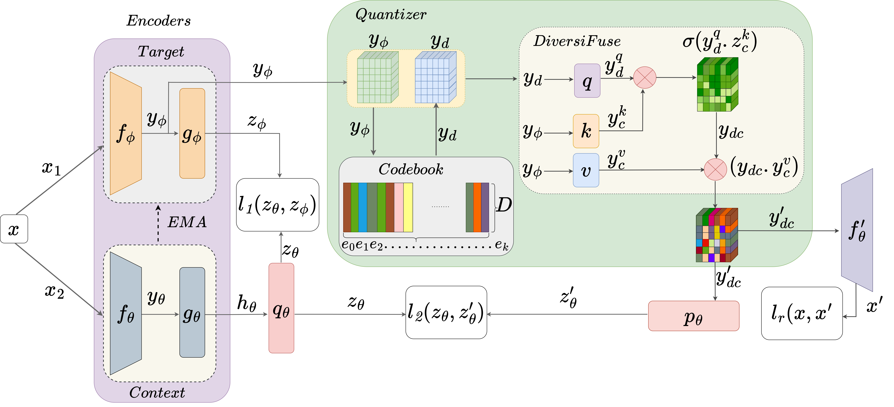
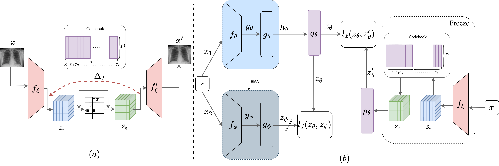

Our Research
MLVICX: Multi-Level Variance-Covariance Exploration for Chest X-ray Self-Supervised Representation Learning
IEEE Journal of Biomedical and Health Informatics, 2024
View Paper

Self-supervised learning (SSL) is potentially useful in reducing the need for manual annotation and making deep learning models accessible for medical image analysis tasks.
By leveraging the representations learned from unlabeled data, self-supervised models perform well on tasks that require little to no fine-tuning. However, for medical images,
like chest X-rays, characterized by complex anatomical structures and diverse clinical conditions, a need arises for representation learning techniques that encode fine-grained
details while preserving the broader contextual information. In this context, we introduce MLVICX (Multi-Level Variance-Covariance Exploration for Chest X-ray Self-Supervised Representation Learning),
an approach to capture rich representations in the form of embeddings from chest X-ray images. Central to our approach is a novel multi-level variance and covariance exploration strategy that effectively
enables the model to detect diagnostically meaningful patterns while reducing redundancy. MLVICX promotes the retention of critical medical insights by adapting global and local contextual details and
enhancing the variance and covariance of the learned embeddings. We demonstrate the performance of MLVICX in advancing self-supervised chest X-ray representation learning through comprehensive experiments.
The performance enhancements we observe across various downstream tasks highlight the significance of the proposed approach in enhancing the utility of chest X-ray embeddings for precision medical diagnosis
and comprehensive image analysis. For pertaining, we used the NIH-Chest X-ray dataset, while for downstream tasks, we utilized NIH-Chest X-ray, Vinbig-CXR, RSNA pneumonia, and SIIM-ACR Pneumothorax datasets.
Overall, we observe up to 3% performance gain over SOTA SSL approaches in various downstream tasks. Additionally, to demonstrate the generalizability of the proposed method, we conducted additional experiments
on fundus images and observed superior performance on multiple datasets.
Read More
CoBooM: Codebook Guided Bootstrapping for Medical Image Representation Learning
MICCAI, 2024
View Paper

Self-supervised learning (SSL) has emerged as a promising paradigm for medical image analysis by harnessing unannotated data. Despite their potential, the existing SSL approaches overlook the high anatomical similarity inherent in medical images. This makes it challenging for SSL
methods to capture diverse semantic content in medical images consistently. This work introduces a novel and generalized solution that implicitly exploits anatomical similarities by integrating codebooks in SSL. The codebook serves as a concise and informative dictionary of visual
patterns, which not only aids in capturing nuanced anatomical details but also facilitates the creation of robust and generalized feature representations. In this context, we propose CoBooM, a novel framework for self-supervised medical image learning by integrating continuous
and discrete representations. The continuous component ensures the preservation of fine-grained details, while the discrete aspect facilitates coarse-grained feature extraction through the structured embedding space. To understand the effectiveness of CoBooM, we conduct a comprehensive
evaluation of various medical datasets encompassing chest X-rays and fundus images. The experimental results reveal a significant performance gain in classification and segmentation tasks.
Read More
IDQCE: Instance Discrimination Learning through Quantized Contextual Embeddings for Medical Images
ICPR, 2024
View Paper

Self-supervised pre-training is effective in learning discrim-
inative features from unlabeled medical images. However, typical self-
supervised models lead to sub-optimal representations due to negligence
of high anatomical similarity present in the medical images. This af-
fects the negative and positive pairs in discriminative self-supervised
models to learn view-invariant representations. Various methods are pro-
posed to address this issue. However, many of them either concentrate
on preserving pixel-level details or offer solutions for specific modali-
ties. In this context, we propose a generalized solution to leverage the
anatomical similarities while relaxing the requirements of complex pixel-
preservation learning. Specifically, we introduce IDQCE: Instance Dis-
crimination Learning through Quantized Contextual Embeddings. The
proposed approach leverages the sparse discrete contextual information
to guide the self-supervised framework to learn more informative repre-
sentations for medical images. We evaluate the representations learned
by IDQCE through comprehensive experiments and observe more than
3% performance gain under linear evaluation protocol over other SOTA
approaches in multiple downstream tasks.
Read More